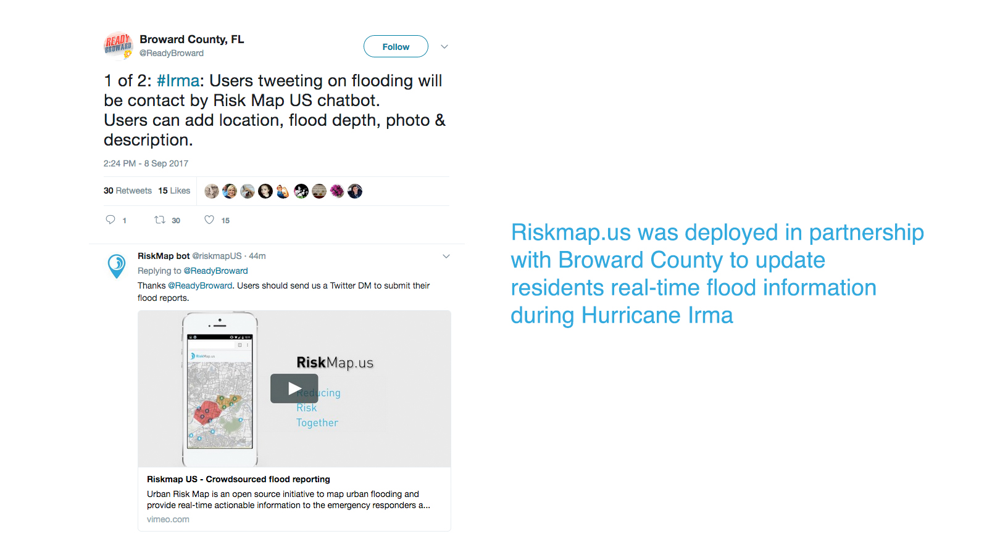
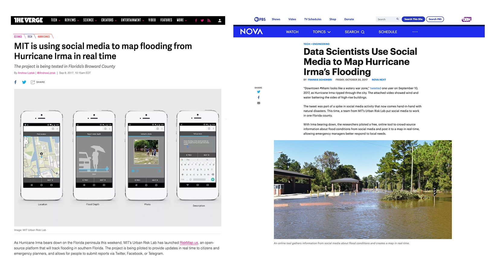
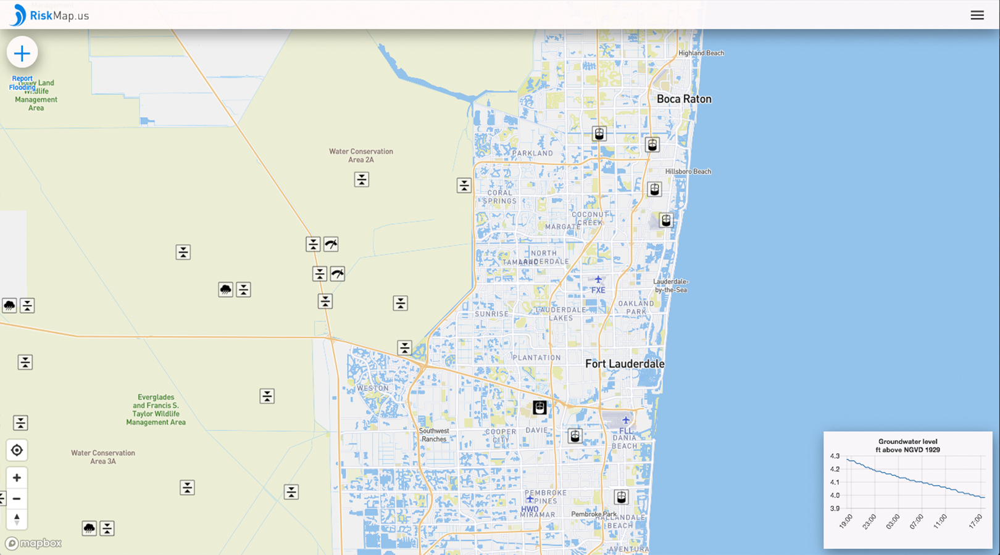
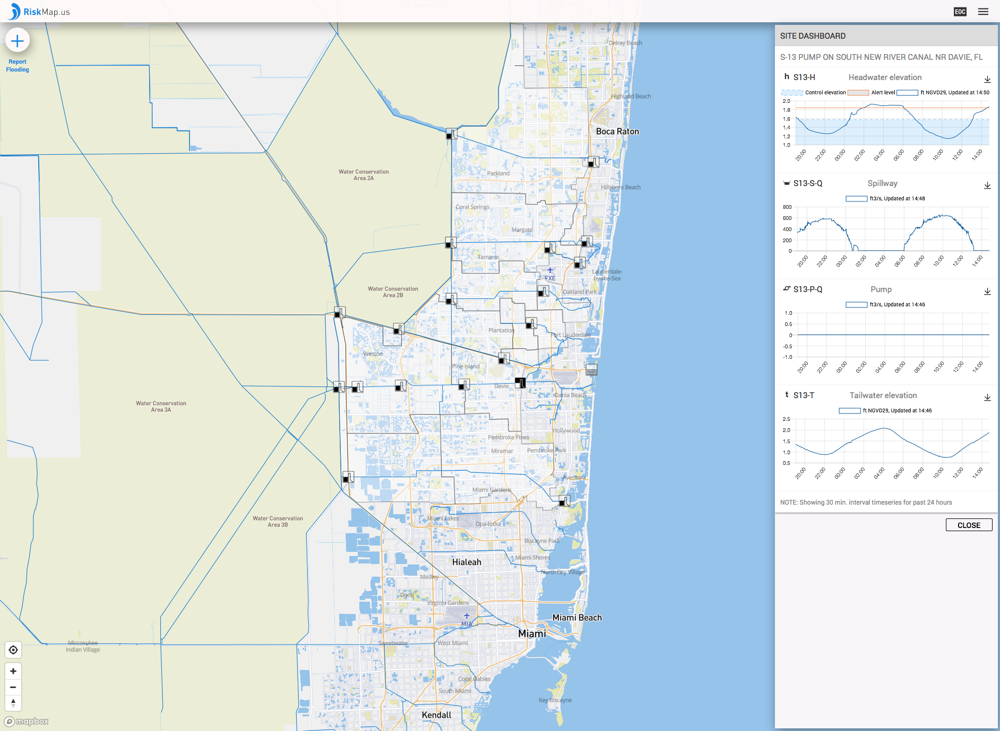
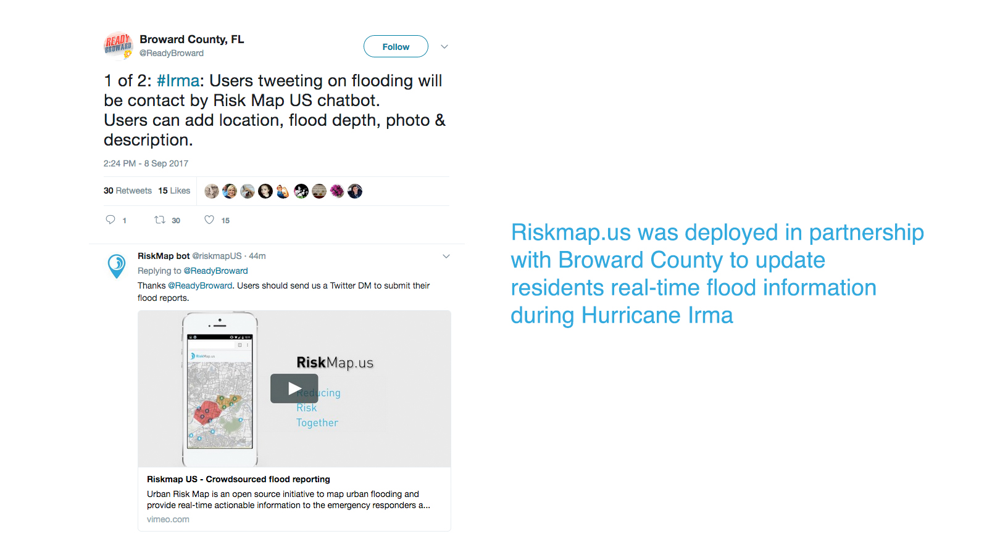
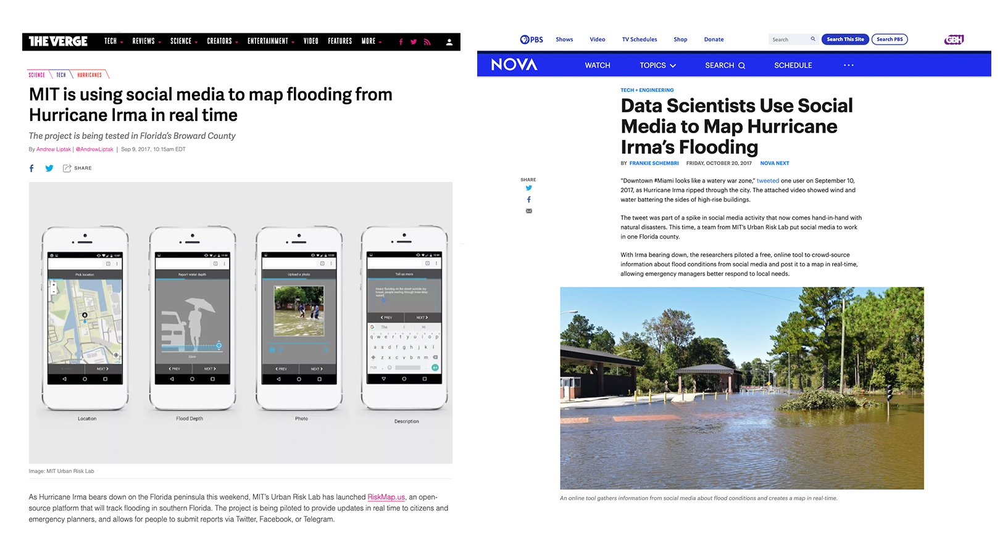
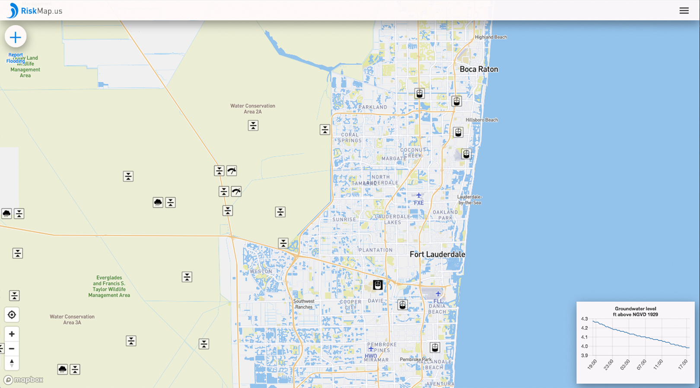
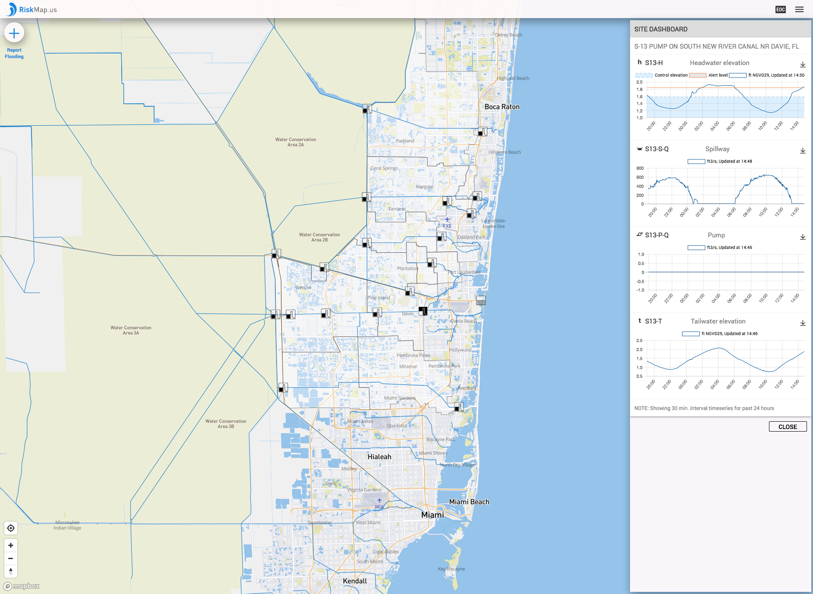

Riskmap platform gathers confirmed flood reports from social media
and messaging platforms. These reports are then added to a
publicly available map helping inform communities about the flood situation in real-time. This platform can also feed this crowd-sourced data to the Emergency Management Departments through a custom-built RED (Risk Evaluation Dashboard).
Riskmap was piloted in Broward County (2017 to 2020) in partnership with Broward County's Department of Environmental Protection and Growth Management and highlights the potential of civic data, gathered and sorted from various social media platforms, to generate a common operating picture for governments and communities.
Project Team
Miho Mazereeuw, Mayank Ojha, Aditya Barve, Abraham Quintero
Past contributers: Manaasa Priyaa Dharmapuri Sridhar, Tomas Holderness, Matthew Berryman
 






